Aquí os ofrecemos el testimonio de nuestras vidas, que pudimos compartir en el X Encuentro Mundial de las Familias, celebrado en el Vaticano el pasado mes de junio de 2022.

Testimonios
Aquí os ofrecemos el testimonio de nuestras vidas, que pudimos compartir en el X Encuentro Mundial de las Familias, celebrado en el Vaticano el pasado mes de junio de 2022.